Starter Pokémon Names in Japanese
All 81 starters from Kanto to Paldea, with katakana, romaji and meanings
Generation 1 – Kanto
 Bulbasaur フシギダネ Fushigidane = “mysterious” + “seed” |  Ivysaur フシギソウ Fushigisō = “mysterious” + “plant” |  Venusaur フシギバナ Fushigibana = “mysterious” + “flower” |
 Charmander ヒトカゲ Hitokage = “fire” + “lizard” |  Charmeleon リザード Rizādo = “lizard” | 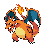 Charizard リザードン Rizādon = “lizard” + “dinosaur-style ending” |
 Squirtle ゼニガメ Zenigame = “young pond turtle” |  Wartortle カメール Kamēru | 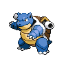 Blastoise カメックス Kamekkusu |
Generation 2 – Johto
 Chikorita チコリータ Chikorīta = “chicory” |  Bayleef ベイリーフ Beirīfu = “bay leaf” |  Meganium メガニウム Meganiumu |
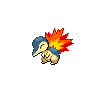 Cyndaquil ヒノアラシ Hinoarashi = “fire” + “porcupine” | 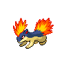 Quilava マグマラシ Magumarashi = “magma” + “porcupine” |  Typhlosion バクフーン Bakufūn = “blast wave” |
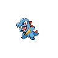 Totodile ワニノコ Waninoko = “little crocodile” |  Croconaw アリゲイツ Arigeitsu = “alligator” | 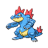 Feraligatr オーダイル Ōdairu |
Generation 3 – Hoenn
 Treecko キモリ Kimori = “tree” + “gecko” |  Grovyle ジュプトル Juputoru = “jungle + reptile” |  Sceptile ジュカイン Jukain |
 Torchic アチャモ Achamo = “ouch, hot!” + “gamecock” |  Combusken ワカシャモ Wakashamo = “young” + “gamecock” |  Blaziken バシャーモ Bashāmo |
 Mudkip ミズゴロウ Mizugorō = “water” + “mudskipper” |  Marshtomp ヌマクロー Numakurō |  Swampert ラグラージ Ragurāji |
Generation 4 – Sinnoh
 Turtwig ナエトル Naetoru = “seedling” + “turtle” |  Grotle ハヤシガメ Hayashigame = “grove” + “turtle” | 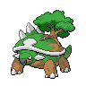 Torterra ドダイトス Dodaitosu = “foundation” + “tortoise” |
 Chimchar ヒコザル Hikozaru = “fire” + “little monkey” |  Monferno モウカザル Mōkazaru = “raging fire” + “monkey” |  Infernape ゴウカザル Gōkazaru = “hellfire” + “monkey” |
 Piplup ポッチャマ Potchama |  Prinplup ポッタイシ Pottaishi |  Empoleon エンペルト Enperuto |
Generation 5 – Unova
 Snivy ツタージャ Tsutāja = “ivy” + “snake” |  Servine ジャノビー Janobī |  Serperior ジャローダ Jarōda |
 Tepig ポカブ Pokabu = “warm” + “pig” | 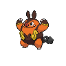 Pignite チャオブー Chaobū |  Emboar エンブオー Enbuō |
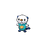 Oshawott ミジュマル Mijumaru = “water” + “boys’ name ending” |  Dewott フタチマル Futachimaru = “two swords” + “boys’ name ending” |  Samurott ダイケンキ Daikenki |
Generation 6 – Kalos
 Chespin ハリマロン Harimaron = “needle” + “chestnut” |  Quilladin ハリボーグ Haribōgu | 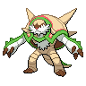 Chesnaught ブリガロン Burigaron |
 Fennekin フォッコ Fokko = “fox” | 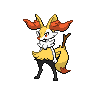 Braixen テールナー Tērunā |  Delphox マフォクシー Mafokushī |
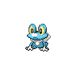 Froakie ケロマツ Keromatsu |  Frogadier ゲコガシラ Gekogashira |  Greninja ゲッコウガ Gekkōga |
Generation 7 – Alola
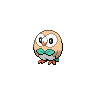 Rowlet モクロー Mokurō = “wood” + “owl” |  Dartrix フクスロー Fukusurō |  Decidueye ジュナイパー Junaipā |
 Litten ニャビー Nyabī |  Torracat ニャヒート Nyahīto |  Incineroar ガオガエン Gaogaen |
 Popplio アシマリ Ashimari = “sea lion” + “ball” |  Brionne オシャマリ Oshamari |  Primarina アシレーヌ Ashirēnu |
Generation 8 – Galar
 Grookey サルノリ Sarunori = “monkey” + “groove” |  Thwackey バチンキー Bachinkī | 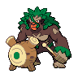 Rillaboom ゴリランダー Gorirandā |
 Scorbunny ヒバニー Hibanī = “fire” + “bunny” |  Raboot ラビフット Rabifutto | 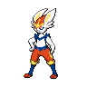 Cinderace エースバーン Ēsubān |
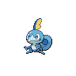 Sobble メッソン Messon = “sobbing” |  Drizzile ジメレオン Jimereon | 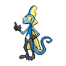 Inteleon インテレオン Intereon |
Generation 9 – Paldea
 Sprigatito ニャオハ Nyaoha = “meow” + “leaf” |  Floragato ニャローテ Nyarōte |  Meowscarada マスカーニャ Masukānya |
 Fuecoco ホゲータ Hogēta |  Crocalor アチゲータ Achigēta | |
 Quaxly クワッス Kuwassu |  Quaxwell ウェルカモ Werukamo | 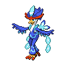 Quaquaval ウェーニバル Wēnibaru |